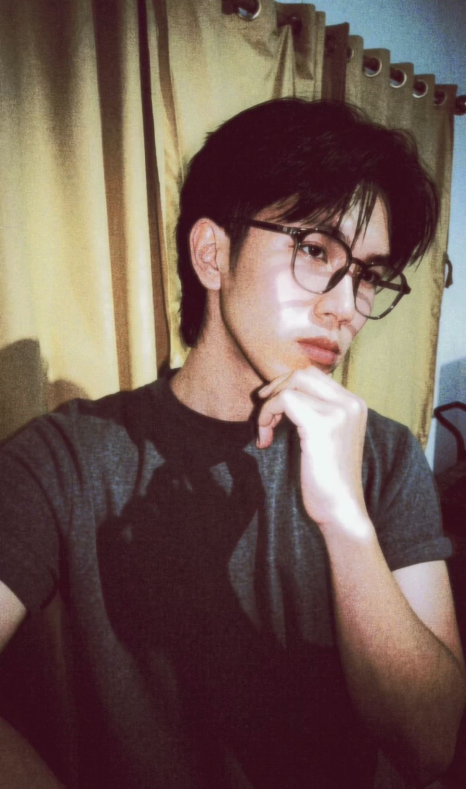

Business websites
Website yang membantu bisnis menjelaskan apa yang mereka tawarkan dengan lebih rapi dan meyakinkan.
Aku Faig. Aku merancang dan membangun website yang bukan cuma enak dilihat, tapi juga terasa jelas, responsif, dan menyenangkan saat digunakan.

Website yang membantu bisnis menjelaskan apa yang mereka tawarkan dengan lebih rapi dan meyakinkan.
Halaman fokus untuk satu ide, satu tujuan, dan ajakan yang mudah ditemukan.
Undangan online yang punya cerita, detail personal, dan interaksi yang terasa hangat.
Konsep toko fashion minimalis dengan fokus pada produk dan visual editorial.
Undangan pernikahan digital dengan timeline cerita, RSVP, dan ucapan.
Konsep antarmuka untuk katalog game, paket top up, dan alur pemesanan.